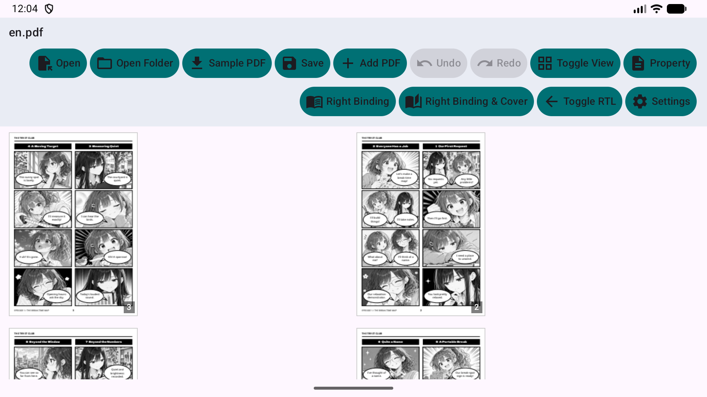
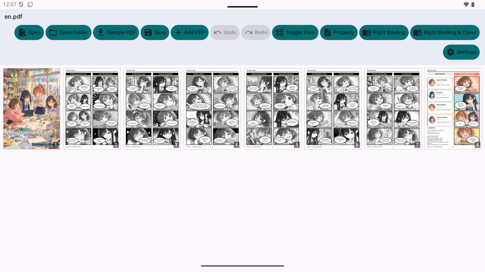
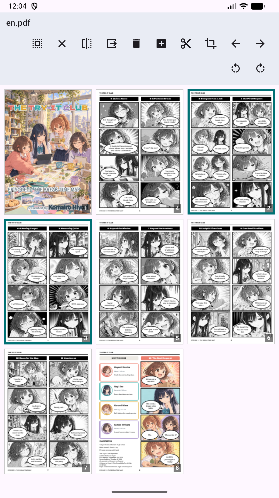
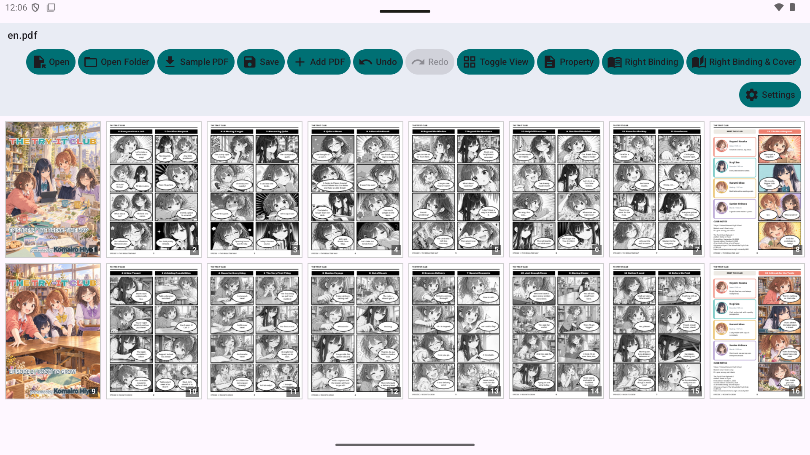
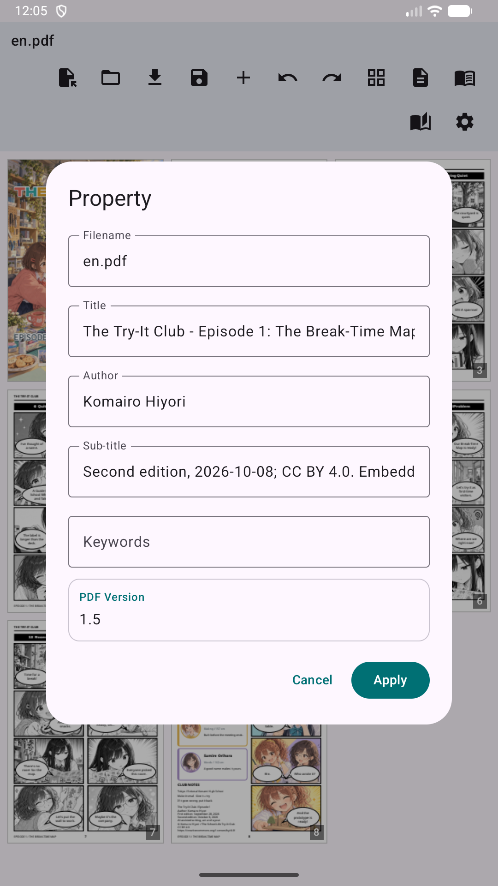
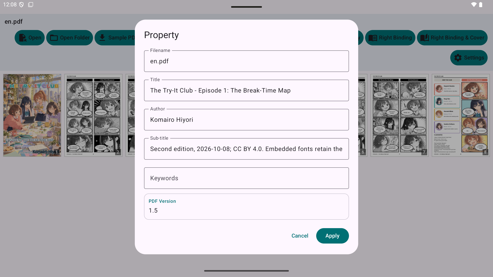
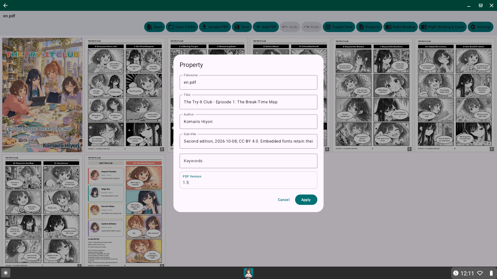

Mihiraki: Two-Page PDF Utility
Visualizzazione, divisione e unione intuitiva di PDF per Android.
Visualizzazione, divisione e unione intuitiva di PDF per Android.
Mihiraki PDF Utility è uno strumento ricco di funzionalità progettato per lettori e creatori. Che tu stia organizzando libri scansionati, unendo documenti o riordinando pagine, la nostra interfaccia intuitiva rende tutto semplice.
Visualizza due pagine una accanto all'altra. Supporta direzioni di lettura LTR e RTL per manga e libri.

Dividi doppie pagine in singole pagine. Supporta la divisione verticale e orizzontale.

Organizza il tuo PDF trascinando semplicemente le miniature. Sposta singole o multiple pagine in una volta sola.

Combina facilmente più file PDF in un unico documento.

Esegui test diagnostici in-app e visualizza i log di audit locali (conservazione di 24 ore, protetti da privacy senza trasmissione esterna, condivisibili).
L'app è progettata per offrire un'esperienza fluida su vari fattori di forma Android, inclusi telefoni, tablet e ambienti desktop come ChromeOS.



Scarica manga PDF di esempio per testare l'app:
51 PDF in 14 lingue e 17 varianti linguistiche e regionali, con tre episodi ciascuna. Spagna/America Latina, Brasile/Portogallo e Taiwan/Hong Kong hanno filtri separati. L’edizione di Hong Kong usa il cinese scritto standard, non il cantonese colloquiale. Dimensioni e SHA-256 vengono verificati; i PDF precedenti restano disponibili.
"The Try-It Club" Episodes 1 & 2
© 2026 Komairo Hiyori
Parti di questa opera per le quali l'editore detiene diritti d'autore e di licenza sono fornite sotto la Creative Commons Attribution 4.0 International License (CC BY 4.0).
Quando si riutilizza quest'opera, si prega di mostrare il titolo dell'opera, il nome dell'autore "Komairo Hiyori", la fonte dell'opera originale e un link alla licenza, indicando chiaramente se sono state apportate modifiche.
L'IA generativa è stata utilizzata nella produzione di testo e immagini, nonché nella traduzione di quest'opera. I materiali con diritti detenuti da terze parti, come i font, sono soggetti alle rispettive licenze. Nulla in questa licenza costituisce una restrizione sull'uso di materiale non protetto da copyright o leggi simili.
I video sono in inglese e si aprono su YouTube.